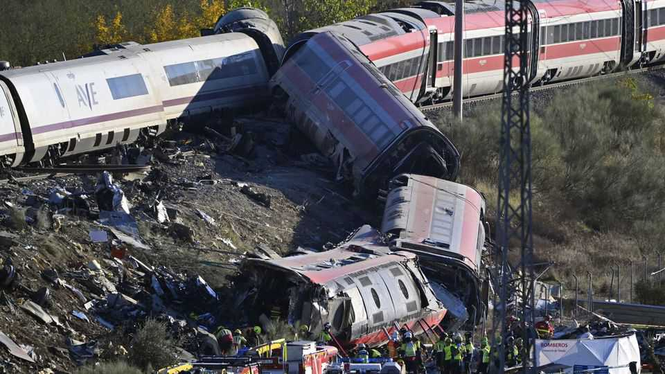
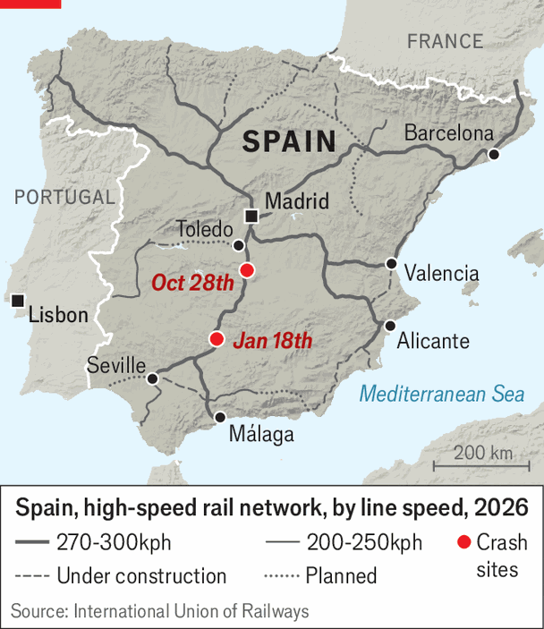

Another deadly train crash puts Spanish infrastructure in question
It is the second collision on the same line this year

Oct 29th 2026
For the second time this year crushed train carriages lie on their sides in the Spanish countryside. On the morning of October 28th a high-speed train operated by Renfe, the state rail company, ploughed into a stationary train south of Toledo. At least 68 people died, and 58 were seriously injured. Survivors described horrific carnage in the first carriage of the Renfe train and the rear three of the stationary one, operated by Iryo, an Italian-controlled competitor.
In January, in a similar tragedy on the same line, 46 people were killed when an Iryo train derailed and was hit by one from Renfe. Until then Spain’s high-speed network, the world’s longest after China’s, was a source of national pride. Now Spaniards are in shock. “It’s not acceptable in a country like Spain” to suffer two serious rail accidents in a year, said Pedro Sánchez, the Socialist prime minister, at the scene. “The whole of Spain is grieving.”

This week’s accident happened after the continuous automatic train-control system, which controls signalling on the line, stopped working. Trains were halted. But in a decision that Oscar Puente, the transport minister, called “inexplicable”, a traffic controller ordered the Renfe train to resume its journey, with fatal consequences 17 minutes later.
“Spain has a right to know what’s happening with its infrastructure,” said Alberto Núñez Feijóo, the leader of the conservative opposition. Mr Sánchez promised an investigation. But they tend to be slow and inconclusive in Spain. A police report blamed the January crash on a defective track repair but that has yet to be confirmed.
Liberalisation of the network in 2021 has led to a big increase in traffic. The government’s critics say that spending on maintenance has not kept pace. And some say both Renfe and Adif, the state rail-infrastructure company, have been stuffed with political appointees. A general election is due on November 29th; most of the candidates have suspended campaigning during three days of official mourning. Soon enough, Spaniards will give their verdict on whom they blame. ■